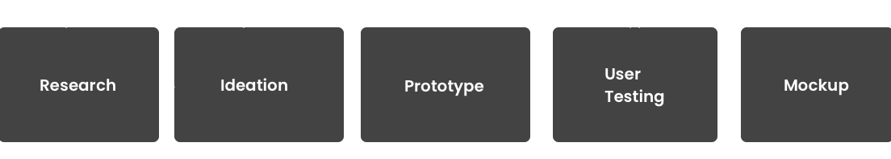
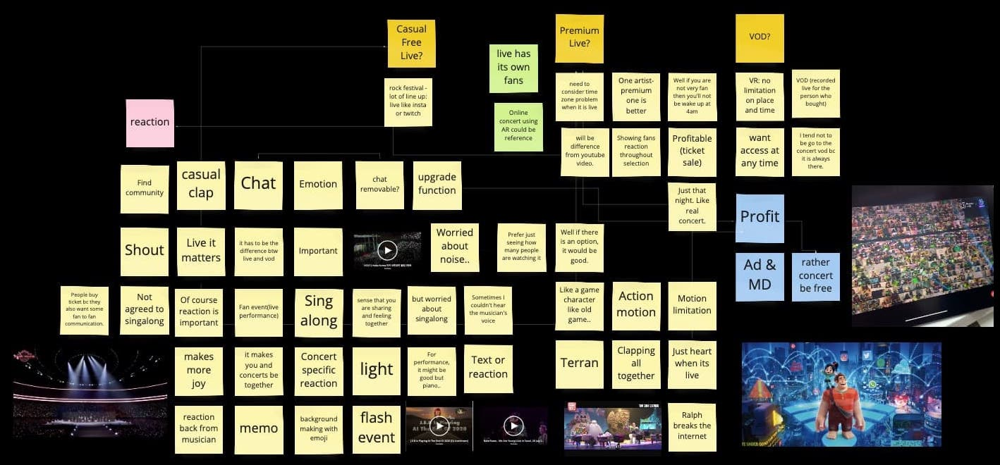
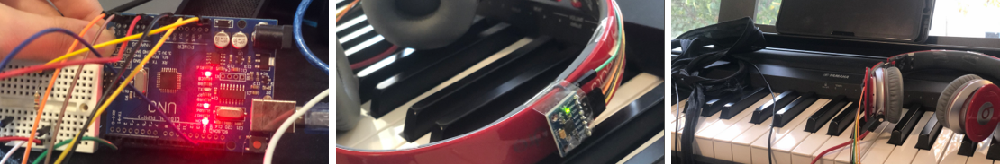
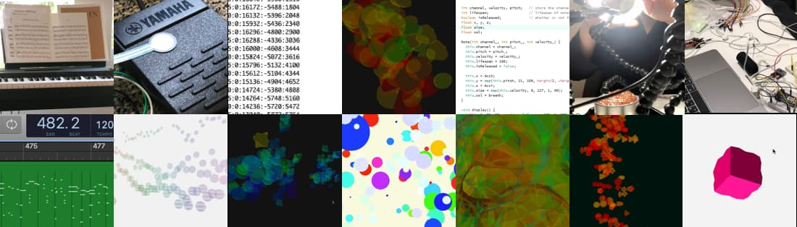
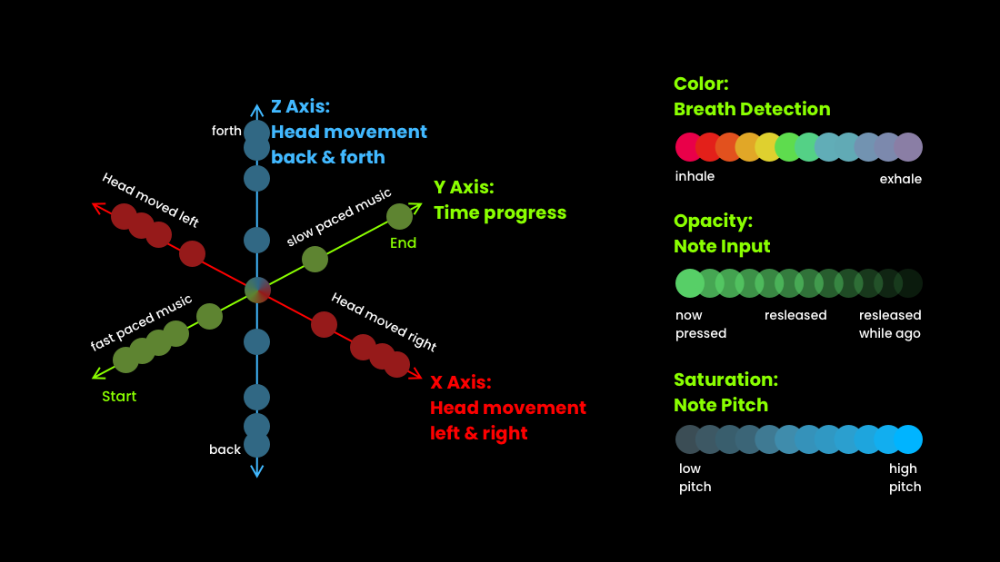

UX, UI, VR Design, Physical Computing, Prototyping, 3D Modeling
Feel the music in a magical way.
Hall is a VR application designed to make the music
experience immersive and fantastical using the virtual world. Feel the music in a scene that the pianist has imagined.
VR experience to enjoy music.
Inside the application, you can choose to watch a live concert or VrOD. reserve the live concert, make a playlist, and enjoy the music.
Enjoy a different look and feel.
Every single VrOD and a live concert would have a different setting. It is curated by the pianist who plays the music, depending on their interpretation.
Feel the music through visualizing effects.
Enjoy the visualizing effect that is generated by the pianist's body expression. You would be able to see the clear difference between every single artist.
BACKGROUND
Same Music, Different Performance
I was always curious about the fact that different pianists have a different nuance of music depending on their interpretation. It is the key reason people prefer different pianists, and also the reason people enjoy live concerts. Also, I wanted to figure out what makes a difference, and also if I can visualize the information!
TARGET USER
Who is the user? Why do they want to use it?
People who cannot afford to pay for flights and concerts.
People with disabilities still want to feel the music.
People who want immersive experiences than just listening to music or going to the concert hall.
People who want to watch their favorite musician's play from the place they would like to be.
PROBLEM
- Limited access to concert hall.
- Expensive ticket price.
- Difficult to understand classical music.
SOLUTION
- Unlimited access to virtual hall.
- Free VROD & Low ticket price for live concert.
- Easy to understand mood (background, text guide)
DESIGN PROCESS
The process of this project was highly focused on prototyping. Since one of the goals was to find an opportunity
to fingerprint body movement, I used lots of ways to find a method and how to visualize it and how to design experience for it.

RESEARCH
I conducted research for two different goals. To capture and display the physical fingerprint of a pianist, I’ve researched precedents and relevant works for research. To make the music experience immersive, I’ve conducted seven interviews with concert-lovers and people who have experience in online concerts. I could get insights and opportunities from research and I chose this application to be a VR application.

DESIGN - MUSIC VISUALIZER
Tools
Sensors to capture pianists' body movement: accelerometer, gyroscope, breath sensor

Prototyping
I used an Arduino board for physical information and Processing for visualizing. Since it was a long process finding an opportunity, here is the preview gallery of my journey. Here are the full blog posts and the code for the prototype in my Github. Full Blog Post Link

PROTOTYPING OUTCOME

Bubbles that represent everything about the music.
Throughout a lot of prototyping, I found the most effective way to present body movement and note information together
just using bubbles. Here is the formula I made for the program.
Look and feel the music.
The result was successful. I could represent time, and also the different expressions of musicians.
Different expressions that you can see the difference.
Here is the comparison you can watch for the difference between two different pianists even though they play the same music.